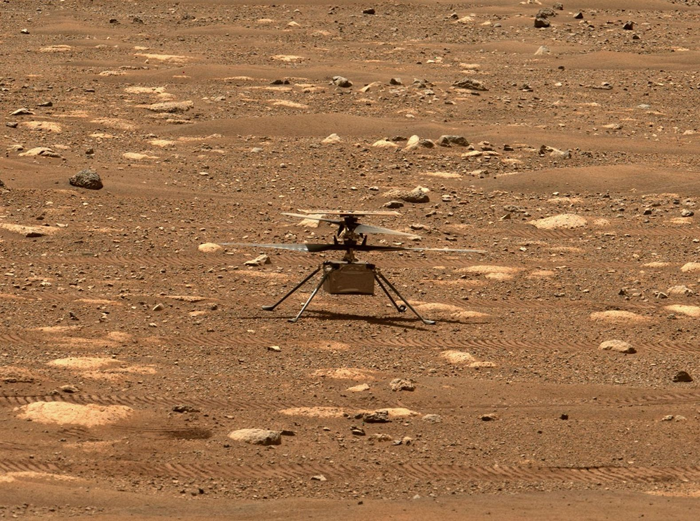
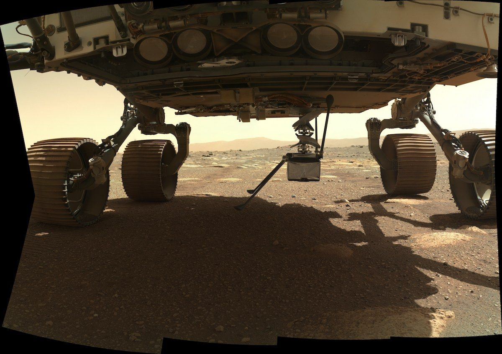
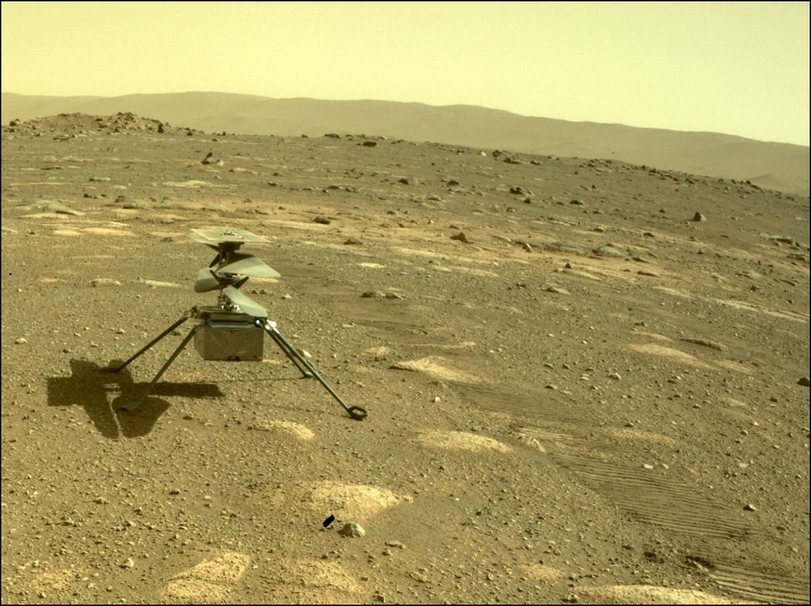
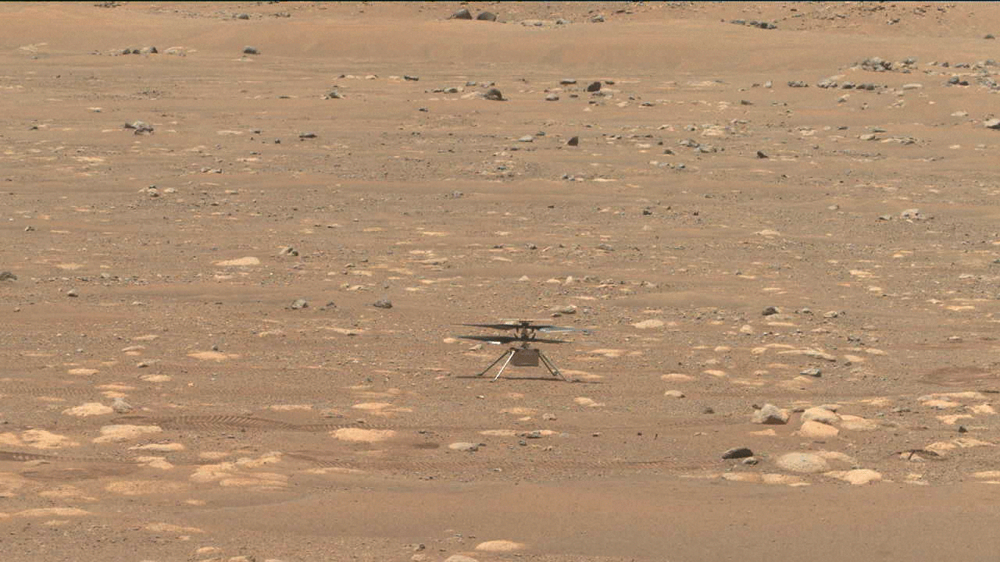
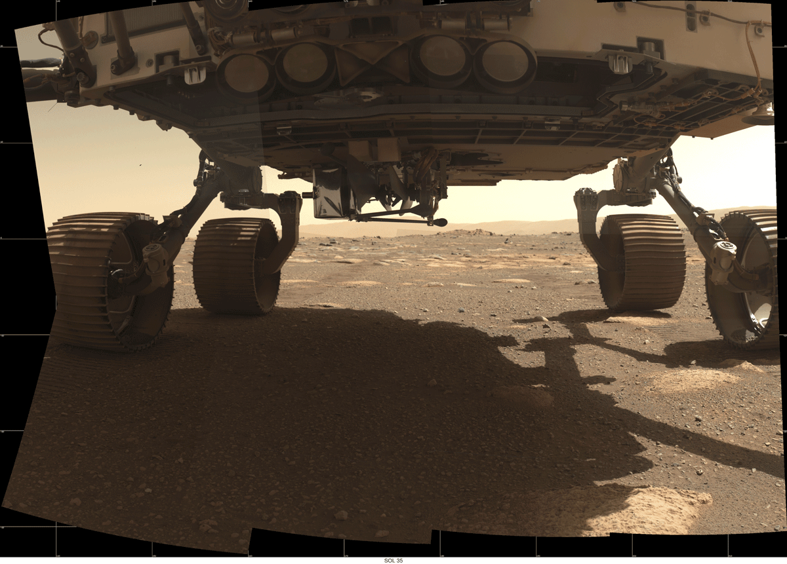
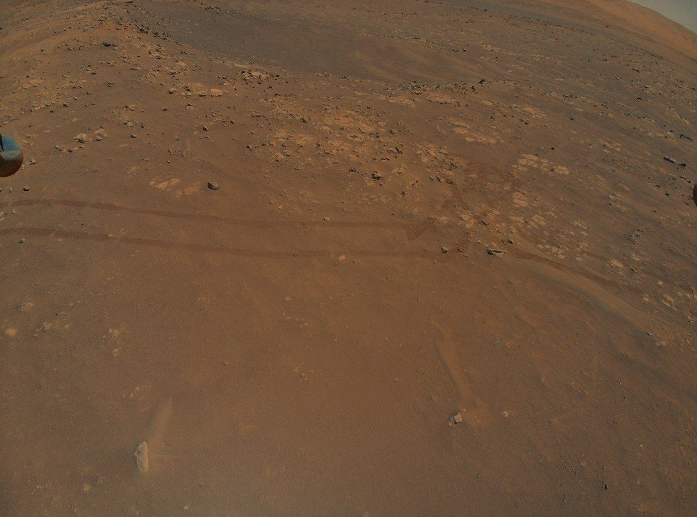
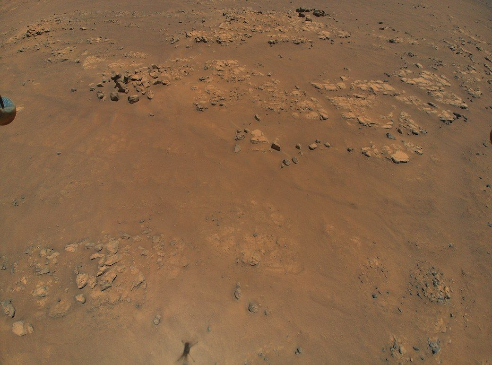
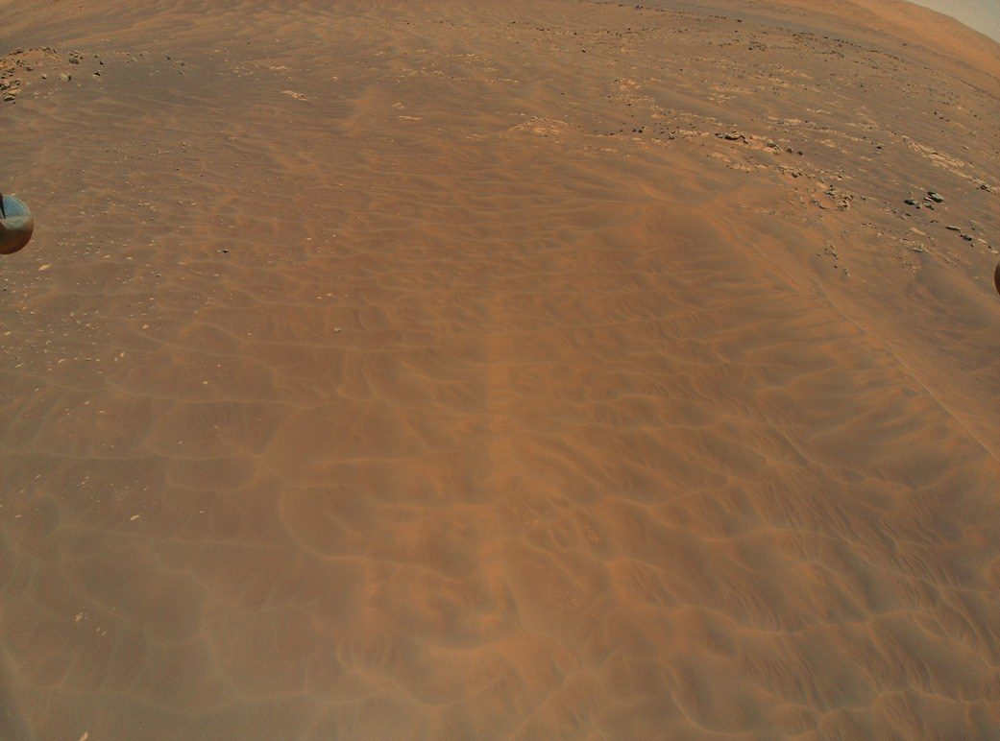
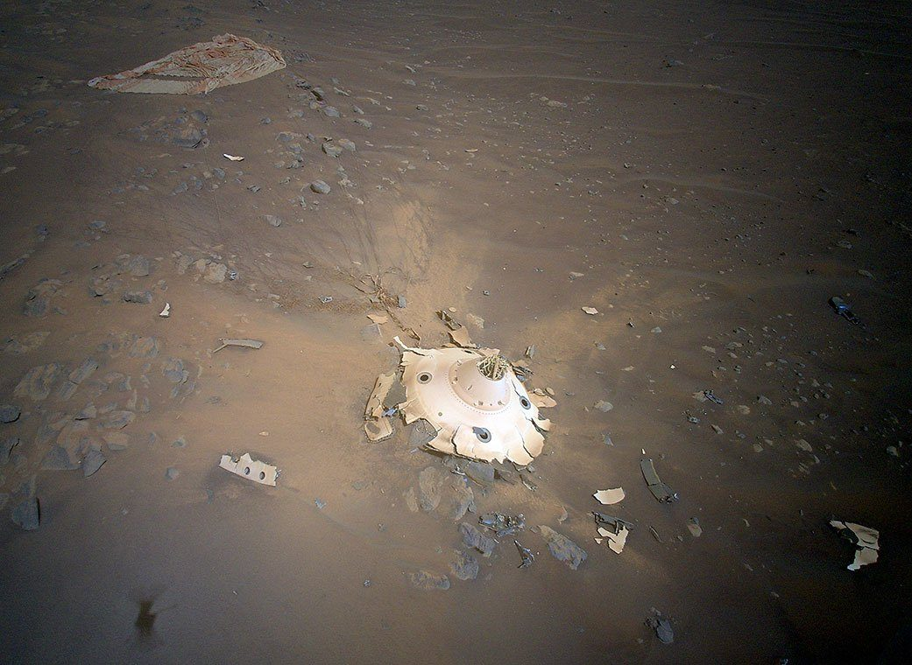
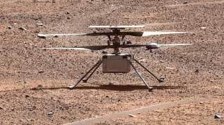

Home / Mars / Ingenuity Helicopter
Ingenuity Helicopter
The first aircraft to fly on another planet.
Mars2021-2024Jezero Crater

At a glance
| Mass | 1.8 kg |
|---|---|
| Rotor span | about 1.2 m |
| Rotor speed | about 2,400 rpm |
| First flight | 3 m for 39 seconds |
| Highest flight | about 24 m |
Overview
Flying on Mars is hard because the air is thin, so the blades must spin much faster than a helicopter on Earth. Ingenuity also had to fly on its own: signals take too long for pilots to react. Engineers planned five test flights, and it flew far more, becoming a scout for Perseverance.
NASA's Ingenuity Mars Helicopter completed 72 historic flights since first taking to the skies above the Red Planet.
After riding to Mars strapped beneath the Perseverance rover, the Ingenuity helicopter took to the Martian air for its initial flight on April 19, 2021— the first powered flight on another planet. ( https://youtu.be/wMnOo2zcjXA?si=dtwb2XIeUSTLuOsf )
Where it began
Ingenuity was a technology demonstration. Mars air is about 1 percent as dense as Earth's, so its carbon-fibre blades spin at 2,400 revolutions per minute.
Devising a craft small enough to fit onto the rover, light enough to fly in Mars’ thin atmosphere, yet hardy enough to withstand the Martian cold presented significant challenges. To ensure the solar array atop the helicopter’s rotors could begin getting sunlight as soon as possible, Perseverance was instructed to move away from Ingenuity shortly after deploying it.
The sole mission of Ingenuity, a technology demonstration, is to conduct flight tests in the thin atmosphere of Mars; the helicopter carries no science instruments. Within 30 Martian days, or sols (a Martian day is 24.6 hours), on the surface, Ingenuity will complete its testing, and Perseverance’s scientific exploration of Jezero Crater will kick into high gear.
Built with many off-the-shelf components, such as smartphone processors and cameras, Ingenuity is now 23 Earth months and 45 flights beyond its expected lifetime. The rotorcraft has flown for over 89 minutes and more than 7.1 miles (11.6 kilometers).
The mission
Planned for only five flights, it travelled to Mars attached to the Perseverance rover and made its first flight on 19 April 2021.

These images were taken by the WATSON (Wide Angle Topographic Sensor for Operations and eNgineering) camera on the SHERLOC (Scanning Habitable Environments with Raman and Luminescence for Organics and Chemicals) instrument, located at the end of the rover's long robotic arm.

Making it through the frigid Martian temperatures after being deployed by NASA’s Perseverance rover is a major milestone for the small rotorcraft.
Evening temperatures at Jezero Crater can plunge as low as minus 130 degrees Fahrenheit (minus 90 degrees Celsius), which can freeze and crack unprotected electrical components and damage the onboard batteries required for flight. Surviving that first night after being deployed from where it was attached to the belly of NASA’s Perseverance rover on April 3 is a major milestone for the 4-pound (1.8 kilograms) rotorcraft. In the days to come, Ingenuity will be the first aircraft to attempt powered, controlled flight on another planet.
“This is the first time that Ingenuity has been on its own on the surface of Mars,” said MiMi Aung, Ingenuity project manager at NASA’s Jet Propulsion Laboratory in Southern California. “But we now have confirmation that we have the right insulation, the right heaters, and enough energy in its battery to survive the cold night, which is a big win for the team. We’re excited to continue to prepare Ingenuity for its first flight test.”
On April 7, the restraints that have been holding the rotor blades together since before launch are scheduled to be released. If the mission team meets that milestone, the next several sols will involve more testing of the rotor blades as well as the motors that drive them. There are also checkouts of the inertial measurement unit (an electronic device that measures a body’s orientation and angular rate) and onboard computers tasked with autonomously flying the helicopter. Additionally, the team will continue to monitor the helicopter’s energy performance, including assessment of solar-array power and state of charge of the craft’s six lithium ion batteries.

In this video captured by NASA’s Perseverance rover, the agency's Ingenuity Mars Helicopter took the first powered, controlled flight on another planet on April 19, 2021.
The rover was parked at “Van Zyl Overlook,” about 211 feet (64.3 meters) away in Mars' Jezero Crater, and chronicled the flight operations with its cameras.
Ingenuity is a technology demonstration. The 4-pound (1.8-kilogram) rotorcraft will help determine whether future explorations on Mars could include an aerial perspective.
NASA’s Ingenuity Mars Helicopter completed its fifth flight on the Red Planet today with its first one-way journey from Wright Brothers Field to an airfield 423 feet (129 meters) to the south. After arrival above its new airfield, Ingenuity climbed to an altitude record of 33 feet (10 meters) and captured high-resolution color images of its new neighborhood before touching down.
The flight represents the rotorcraft’s transition to its new operations demonstration phase. This phase will focus on investigating what kind of capabilities a rotorcraft operating from Mars can provide. Examples include scouting, aerial observations of areas not accessible by a rover, and detailed stereo imaging from atmospheric altitudes. These operations and the lessons learned from them could significantly benefit future aerial exploration of Mars and other worlds.
The flight began at 3:26 p.m. EDT (12:26 p.m. PDT, 12:33 p.m. local Mars time) and lasted 108 seconds. The Ingenuity team chose the new landing site based on information gathered during the previous flight – the first “aerial scout” operation on another world – which enabled them to generate digital elevation maps indicating almost completely flat terrain with almost no obstructions.
How it worked
After proving it could fly, it became a scout, photographing terrain ahead of Perseverance and finding safe routes. It carried a tiny piece of fabric from the Wright brothers' first airplane.
| Mass | 3.97 pounds (1.8 kilograms) |
|---|---|
| Weight | 4 pounds on Earth (1.81 kilograms on Mars); 1.5 pounds on Mars (.68 kilograms) |
| Width | Total length of rotors: Approximately 4 feet (approximately 1.2 meters) tip to tip |
| Power | Solar panel charges Lithium-ion batteries, providing enough energy for one 90-second flight per Martian day ( approximately 350 Watts of average power during flight) |
| Blade span | Just under 4 feet (1.2 meters) |
| Flight range | Up to 980 feet (300 meters) |
| Flight altitude | Up to 15 feet (5 meters) |
| Flight environment | Thin atmosphere, less than 1 percent as dense as Earth's |

Ingenuity’s flights are autonomous. “Pilots” at JPL plan them and send commands to the Perseverance Mars rover, which then relays those commands to the helicopter. During a flight, onboard sensors – the navigation camera, an inertial measurement unit, and a laser range finder – provide real-time data to Ingenuity’s navigation processor and main flight computer, which guide the helicopter in flight. This enables Ingenuity to react to the landscape while carrying out its commands.
What it found
Powered flight on Mars is possible. This gave engineers the confidence to plan future aerial explorers.

Ingenuity’s ninth flight provided imagery that will help the Perseverance rover team develop its science plan going forward.
During the flight – designed to test the helicopter’s ability to serve as an aerial scout – Ingenuity soared over a dune field nicknamed “Séítah.” Perseverance is making a detour south around those dunes, which would be too risky for the six-wheeled rover to try crossing.
The color images from Ingenuity, taken from a height of around 33 feet (10 meters), offer the rover team much greater detail than they get from the orbiter images they typically use for route planning. While a camera like HiRISE (the High Resolution Imaging Science Experiment) aboard NASA’s Mars Reconnaissance Orbiter can resolve rocks about 3 feet (1 meter) in diameter, missions usually rely on rover images to see smaller rocks or terrain features.

Ingenuity (its shadow is visible at the bottom of this image) offered a high-resolution glimpse of rock features nicknamed “Raised Ridges.” They belong to a fracture system, which often serve as pathways for fluid to flow underground.
Here in Jezero Crater, a lake existed billions of years ago. Spying the ridges in images from Mars orbiters, scientists have wondered whether water might have flowed through these fractures at some point, dissolving minerals that could help feed ancient microbial colonies. That would make them a prime location to look for signs of ancient life – and perhaps to drill a sample.

Sand dunes like the ones in this image keep rover drivers like JPL’s Olivier Toupet awake at night: Knee- or waist-high, they could easily cause the two-ton rover to get stuck. After landing in February, Perseverance scientists asked whether it was possible to make a beeline across this terrain; Toupet’s answer was a hard no.
“Sand is a big concern,” said Toupet, who leads the team of mobility experts that plans Perseverance’s drives. “If we drive downhill into a dune, we could embed ourselves into it and not be able to get back out.”

NASA’s Ingenuity Mars Helicopter recently surveyed both the parachute that helped the agency’s Perseverance rover land on Mars and the cone-shaped backshell that protected the rover in deep space and during its fiery descent toward the Martian surface on Feb. 18, 2021. Engineers with the Mars Sample Return program asked whether Ingenuity could provide this perspective. What resulted were 10 aerial color images taken April 19 during Ingenuity’s Flight 26.
But those collected by the rotorcraft (from an aerial perspective and closer) provide more detail. The images have the potential to help ensure safer landings for future spacecraft such as the Mars Sample Return Lander, which is part of a multimission campaign that would bring Perseverance’s samples of Martian rocks, atmosphere, and sediment back to Earth for detailed analysis.
Video from the navigation camera aboard NASA’s Ingenuity Mars Helicopter shows its record-breaking 25th flight on April 18, 2022. Covering 2,310 feet (704 meters) at a maximum speed of 12 mph (5.5 meters per second), it was the rotorcraft’s longest and fastest flight to date. Credits: NASA/JPL-Caltech
The Ingenuity Mars Helicopter’s black-and-white navigation camera has provided dramatic video of its record-breaking 25th flight, which took place on April 8. Covering a distance of 2,310 feet (704 meters) at a speed of 12 mph (5.5 meters per second), it was the Red Planet rotorcraft’s longest and fastest flight to date. (Ingenuity is currently preparing for its 29th flight.)
“Over the past nine months, we have doubled our max airspeed and altitude, increased our rate of vertical and horizontal acceleration, and even learned to land slower,” said Travis Brown, Ingenuity’s chief engineer at JPL. “The envelope expansion provides invaluable data that can be used by mission designers for future Mars helicopters.”
So, to achieve a higher maximum ground speed, the team sends commands for Ingenuity to fly at higher altitudes (instructions are sent to the helicopter before each flight), which keeps features in view longer. Flight 61 established a new altitude record of 78.7 feet (24 meters) as it checked out Martian wind patterns. With Flight 62 Ingenuity set a speed record of 22.3 mph (10 meters per second) – and scouted a location for the Perseverance rover’s science team.
Why it was left behind
On its 72nd flight, in January 2023, Ingenuity's rotor blades were damaged on landing. The helicopter remained intact and talking but could not fly again.

Originally designed as a technology demonstration to perform up to five experimental test flights over 30 days, the first aircraft on another world operated from the Martian surface for almost three years, performed 72 flights, and flew more than 14 times farther than planned while logging more than two hours of total flight time.
Ingenuity’s team planned for the helicopter to make a short vertical flight on Jan. 18 to determine its location after executing an emergency landing on its previous flight. Data shows that, as planned, the helicopter achieved a maximum altitude of 40 feet (12 meters) and hovered for 4.5 seconds before starting its descent at a velocity of 3.3 feet per second (1 meter per second).
However, about 3 feet (1 meter) above the surface, Ingenuity lost contact with the rover, which serves as a communications relay for the rotorcraft. The following day, communications were reestablished and more information about the flight was relayed to ground controllers at NASA JPL. Imagery revealing damage to the rotor blade arrived several days later. The cause of the communications dropout and the helicopter’s orientation at time of touchdown are still being investigated.
Over an extended mission that lasted for almost 1,000 Martian days, more than 33 times longer than originally planned, Ingenuity was upgraded with the ability to autonomously choose landing sites in treacherous terrain, dealt with a dead sensor, cleaned itself after dust storms, operated from 48 different airfields, performed three emergency landings, and survived a frigid Martian winter.
Designed to operate in spring, Ingenuity was unable to power its heaters throughout the night during the coldest parts of winter, resulting in the flight computer periodically freezing and resetting. These power “brownouts” required the team to redesign Ingenuity’s winter operations in order to keep flying.
With flight operations now concluded, the Ingenuity team will perform final tests on helicopter systems and download the remaining imagery and data in Ingenuity’s onboard memory. The Perseverance rover is currently too far away to attempt to image the helicopter at its final airfield.
Where it is now
It is parked in Jezero Crater, still sending data for some time after its last flight.
“It’s humbling Ingenuity not only carries onboard a swatch from the original Wright Flyer, but also this helicopter followed in its footsteps and proved flight is possible on another world,” said Ingenuity’s project manager, Teddy Tzanetos of NASA JPL. “The Mars helicopter would have never flown once, much less 72 times, if it were not for the passion and dedication of the Ingenuity and Perseverance teams. History’s first Mars helicopter will leave behind an indelible mark on the future of space exploration and will inspire fleets of aircraft on Mars – and other worlds – for decades to come.”
1. The first aircraft to achieve powered, controlled flight on another planet, a feat that's been called a "Wright Brothers moment."
2. Completed 128.8 flying minutes, covering 10.5 miles (17.0 kilometers), and reaching altitudes as high as 78.7 feet (24.0 meters).
3. Successfully flying in the extremely thin Martian atmosphere.
4. Previewing areas of Mars of possible interest for the Perseverance rover to explore.
5. Paved the way for future aerial explorers at Mars and, potentially, other space destinations.
A small piece of fabric from the Wright brothers' 1903 airplane was attached to the helicopter, linking two firsts. Perseverance recorded the sound of the rotors, and later photographed the damaged helicopter. Its success led NASA to study larger aircraft for future Mars missions.
Timeline of events
- 18 Feb 2021 Perseverance lands with Ingenuity underneath
- 3 Apr 2021 Ingenuity is dropped to the surface
- 19 Apr 2021 First powered flight on another planet
- Jan 2023 Flight 72 ends with rotor damage
- 25 Jan 2024 NASA ends the mission
2024
NASA ended the mission on 25 January.
Read more on NASAText and images adapted from NASA mission pages.